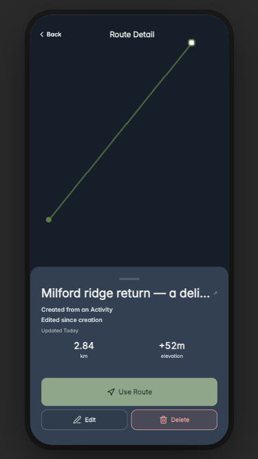

Route Detail · revision 02 affected surfaces
Evidence boundary: current source rendered in Expo Web with a synthetic disposable fixture. Every API operation was intercepted locally and external requests were blocked. The delete flow exercised the actual confirmation, store tombstone, ambiguous client-endpoint 404, numeric fallback, navigation, and reload handlers. Native Mapbox, physical-device layout/touch/accessibility, deployment, device loading, and owner acceptance remain unverified.

Referenced captures

detail-two-metrics-long-name · day · 390x844
Current source after raw vertex metric removal and shared Use Route label correction. Map appearance is a Web/native-map fallback, not Mapbox proof.

detail-two-metrics-long-name · sunset · 390x844
Current source after raw vertex metric removal and shared Use Route label correction. Map appearance is a Web/native-map fallback, not Mapbox proof.

detail-two-metrics-long-name · night · 390x844
Current source after raw vertex metric removal and shared Use Route label correction. Map appearance is a Web/native-map fallback, not Mapbox proof.

use-route-hike-run-chooser · day · 390x844
Actual Route Detail handler opened explicit Hike/Run choices; recording was not started.

delete-confirmation-cancel-path · day · 390x844
Actual confirmation opened; Keep Route is non-destructive.

small-web-constraint-long-name · night · 375x667
375x667 Web constraint only; not a native small-iPhone or safe-area claim.